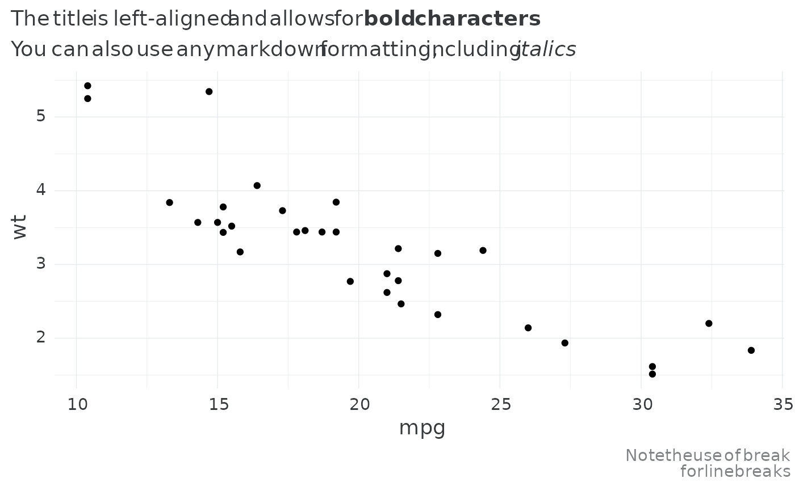

A custom ggplot2 theme based on my own personal preferences. This assumes the user (me) has the required custom fonts already installed.
Usage
theme_rieke(
base_size = 14,
title_ratio = 24/14,
title_family = "Playfair Display",
base_family = "IBM Plex Sans",
base_color = "#363a3c"
)Examples
library(ggplot2)
# plotting with NULL families --- must install default fonts locally
# plotting with `title_ratio = 1` since not using the default of Playfair Display
ggplot(mtcars, aes(mpg, wt)) +
geom_point() +
theme_rieke(title_family = NULL,
base_family = NULL,
title_ratio = 1) +
labs(title = "The title is left-aligned and allows for **bold characters**",
subtitle = "You can also use any markdown formatting, including *italics*",
caption = "Note the use of break<br>for line breaks")
